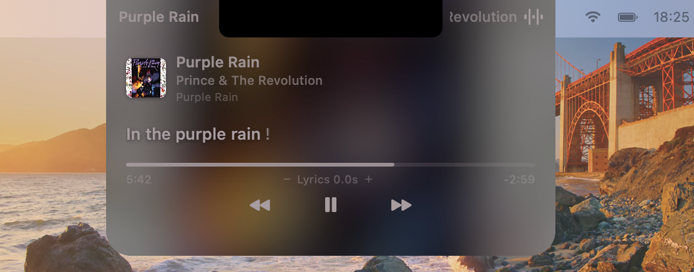
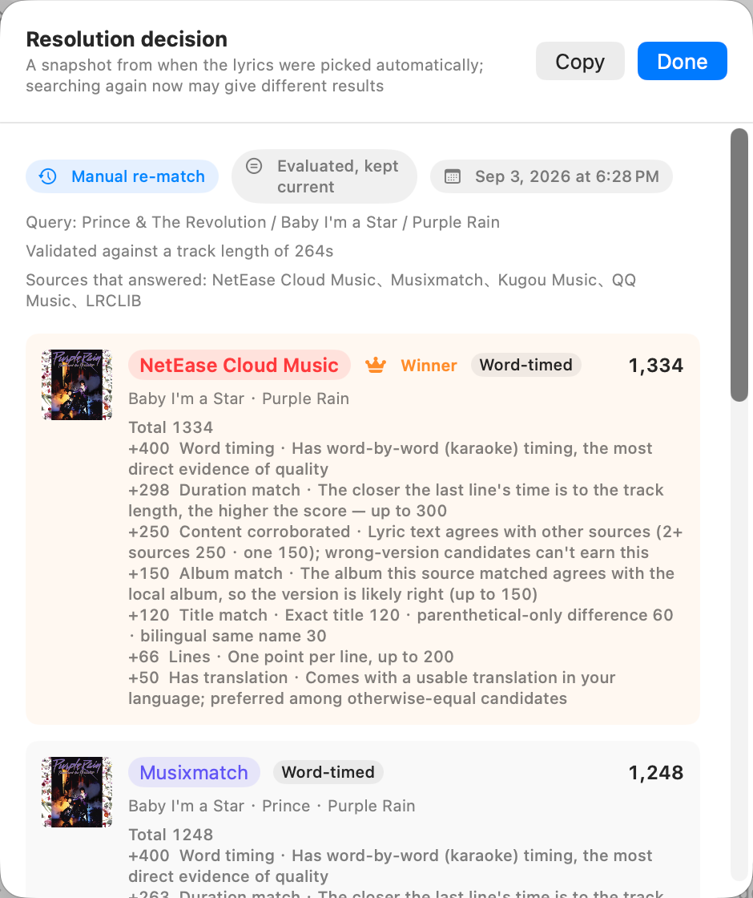

Word-synced desktop lyrics for macOS
Real-time, word-by-word lyrics for Apple Music, Spotify, QQ Music, NetEase Cloud Music, Kugou — and YouTube Music / Spotify Web playing in any browser. Free and open source (GPL-3.0), actively maintained. macOS 14+, Apple Silicon & Intel.
brew tap yudaotor/lyrimuse && brew install --cask lyrimuse


Features
Works with your players — plural
Apple Music, Spotify, QQ Music, NetEase Cloud Music, Kugou — pick any combination or let it auto-detect. Pair a browser once and YouTube Music / Spotify Web become first-class players, synced to the page's own progress bar.
Picks the right lyrics
Every candidate from 8 sources is scored on one scale; the decision is shown per track, wrong matches can self-heal, and your manual pick is locked. How matching works ↓
Translation & romanization
Community translations when the source has them, otherwise on-device Apple translation in 18 target languages. Per-line pinyin, Cantonese Jyutping and Japanese furigana readings.
Four ways to show it
Floating overlay, Dynamic-Island-style capsule, menu-bar lyrics, or a full Apple-Music-style lyrics window — any combination, fully themeable, hidden during screen sharing.
Last.fm & ListenBrainz
One-click scrobbling to both, offline backfill, local listening history, Top charts, on-this-day look-backs and a GitHub-style listening heatmap.
Private & open source
GPL-3.0, no telemetry, translation on-device by default, every outbound request written to a local audit log. No Apple Developer account involved — build it from source if you like.
It picks the right lyrics — and shows you why
Anyone who has used a multi-source lyrics app knows the pain of a wrong version getting matched. Lyrimuse scores every candidate from every source on one scale — title, artist, album and reported-duration fit, plus quality signals like word-level timing — and the highest score wins, instead of whichever source answered first. Each track has a resolution panel showing every candidate's score and why the winner won. When a source later offers a cleaner match, Lyrimuse can upgrade automatically; a lyric you picked by hand is locked and never overridden.

FAQ
Does it work with lyrics for YouTube Music playing in a browser?
Yes — pair the browser of your choice once, and YouTube Music or Spotify Web becomes a first-class player. Lyrics sync to the page's own progress bar, and a one-click self-test tells you whether the browser can be driven before you commit.
Is Lyrimuse an alternative to LyricsX?
Yes — LyricsX hasn't shipped a release since April 2022. Lyrimuse is actively maintained, adds QQ Music / NetEase / Kugou and browser web players, scored lyric matching, Jyutping/furigana romanization and Last.fm stats. See the fact-checked comparison.
Do lyrics work offline?
Once a song's lyrics have been resolved once, yes — local mode shows cached lyrics with no network round-trip.
Does it support Intel Macs?
Yes — a separate universal build ships with every release, and in-app auto-update covers Intel too.
Do I need an Apple Developer account?
No — Lyrimuse ships ad-hoc signed. The Homebrew install clears the one-time Gatekeeper step automatically; the README covers manual options.